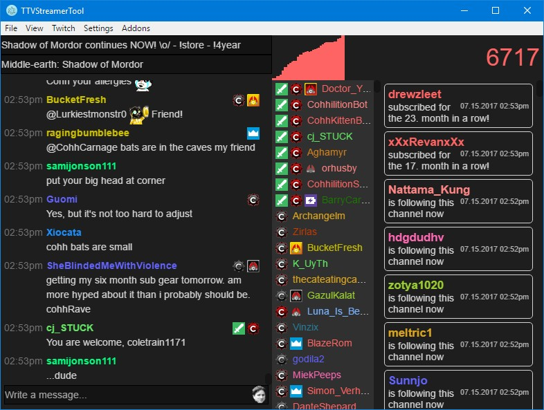

TTVStreamerTool
TTVST is an application aimed at Twitch streamer. On the main view you will be able to read the chat, see the people who are in the chat, the current number of viewers and notifications for follows, subscriptions, bans, timeouts and other stuff. There is also a local http host in there for OBS or Xsplit overlays. You can set up hotkeys to control these.
To make TTVST unique for your streaming needs it's possible to create your own overlays and addons. I will document how to do that in the coming future. To start of, read the Getting Started Guide.
Platform
The TTVStreamerTool is developed and tested on an Windows 10 x64 system. I guess everything >= Windows 8 should work.
Linux or MacOS are not supported. You could download the source code and tweak it here and there to make it work though...
Download & Install
Download the zip in the v0.1.2 release and unpack it somewhere you don't need elevated writing rights. This is because the auto updater needs to overwrite some files there. You could start the program as an administrator but this is not recommended.
After unpacking start the tool by double clicking the ttv-streamertool.exe.
Screenshot

Report issues
To report issues or request improvements/features, please use the github issues page.